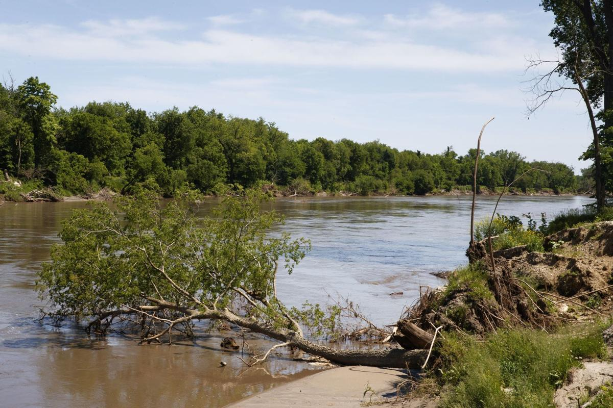

We have one of the best zoos in the world. It's got a really nice aquarium and it also has the desert dome which is full of animals that typically live in deserts. Who woulda thunk |
|
|
We have the old market, it looks cool and it has a good atmsophere. You can buy all sorts of things there. |
|
|  |
We have several bodies of water which are good for swimming, fishing, and all sorts of stuff. One time I almost got robbed at Lake Zorinsky. |
Created By Charles Shald